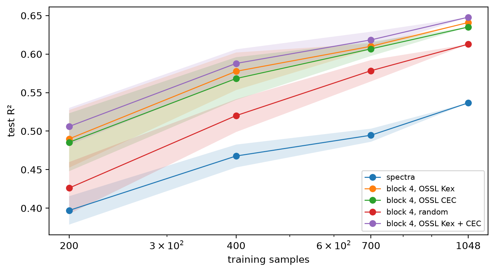

Predict the ratio of exchangeable to total Cs-137 from frozen layers of the OSSL Kex and CEC models, against PLSR and ridge regressions on the spectra
import numpy as np, pandas as pdimport matplotlib.pyplot as pltfrom sklearn.cross_decomposition import PLSRegressionfrom sklearn.model_selection import GridSearchCV, KFoldfrom sklearn.metrics import r2_scorefrom fastai.torch_core import set_seedfrom soilspecdl.allimport SpectralCNN, regression_scoresfrom ossl_fuku_transfer.data import*from ossl_fuku_transfer.transfer import*from ossl_fuku_transfer.inside import layer_features, probefrom kennard_stone import train_test_split as ks_split
/Users/franckalbinet/pro/dev/soilspec/ossl-fuku-transfer/.venv/lib/python3.13/site-packages/torch/jit/_script.py:1491: FutureWarning: `torch.jit.script` is deprecated. Please switch to `torch.compile` or `torch.export`.
warnings.warn(
Every code cell reads the Fukushima data or the saved OSSL models, and is marked #| fukudata.
Target and scores
The target is the Cs137 study’s exCs137_totalCs137: log10 of exchangeable over total Cs-137. ratio_scores, which is regression_scores, gives R², correlation r, and the RMSE and bias, all on that log10 scale:
ref = fuku_path()/'reference'csv = {s: pd.read_csv(ref/f'cs137_ratio_{s}.csv') for s in ('train', 'test')}ratio = pd.concat(csv.values()).assign(ID=lambda d: d.ID.astype(str)).set_index('ID')['exCs137_totalCs137']ratio_scores = regression_scoresratio.describe().round(3).to_dict()
The Cs137 study’s own spectra: 657 points from 685 to 3965 cm⁻¹, as exported for that study, with 1,194 training and 398 test samples. The current selection has .spa files for 1,388 of these samples: 1,047 training and 341 test samples. PLSR, with the number of components chosen by 5-fold cross-validation on the training samples, and a ridge regression, on the full split and on the samples of the current selection. This shows how much the smaller selection alone changes the scores:
def plsr(Xtr, ytr, Xte, yte, max_comp=60):"Test scores of PLSR with the number of components chosen by 5-fold cross-validation" gs = GridSearchCV(PLSRegression(scale=False), {'n_components': range(1, max_comp +1)}, cv=KFold(5, shuffle=True, random_state=0), scoring='neg_mean_squared_error').fit(Xtr, ytr)return {**ratio_scores(yte, gs.predict(Xte).ravel()), 'components': gs.best_params_['n_components']}sel =set(sample_ids())study = {}for name, keep in (('full split', lambda d: d), ('current selection', lambda d: d[d.ID.astype(str).isin(sel)])): tr, te = keep(csv['train']), keep(csv['test']) Xtr, Xte = tr.filter(regex='^X').to_numpy(), te.filter(regex='^X').to_numpy() ytr, yte = tr.exCs137_totalCs137.to_numpy(), te.exCs137_totalCs137.to_numpy() study[name, 'PLSR'] = {'n train': len(tr), 'n test': len(te), **plsr(Xtr, ytr, Xte, yte)} study[name, 'ridge'] = {'n train': len(tr), 'n test': len(te), **probe(Xtr, ytr, Xte, yte, score_fn=ratio_scores)}pd.DataFrame(study).T.round(3)
n train
n test
R²
r
RMSE
bias
components
alpha
full split
PLSR
1194.0
398.0
0.543
0.744
0.245
0.037
33.0
NaN
ridge
1194.0
398.0
0.544
0.751
0.245
0.044
NaN
31.623
current selection
PLSR
1048.0
341.0
0.558
0.755
0.229
0.037
30.0
NaN
ridge
1048.0
341.0
0.555
0.754
0.230
0.038
NaN
10.000
Spectra of the current selection
The .spa spectra on the shared 2 cm⁻¹ grid, with SNV and a Savitzky-Golay first derivative as in 03_kex. Both steps work on each spectrum alone, so fitting them on Fukushima gives the same result as fitting them on OSSL. The same training and test samples as the current selection above:
(1048,
341,
R² r RMSE bias components alpha
PLSR 0.560 0.757 0.229 0.038 23.0 NaN
ridge 0.537 0.742 0.235 0.041 NaN 100.0)
Frozen layers
Ridge regressions on each layer of three models, as in 07_inside_transfer: the saved OSSL Kex and CEC models, and a model with random weights as a control. Neither OSSL model ever saw the Cs-137 ratio. The test R²:
set_seed(0)models = {'OSSL Kex': load_pretrained('ossl_kex_snv_d1'), 'OSSL CEC': load_pretrained('ossl_cec_snv_d1'), 'random': SpectralCNN()}F = {m: layer_features(model, Xf_d) for m, model in models.items()}F['OSSL Kex + CEC'] = {k: np.hstack([F['OSSL Kex'][k], F['OSSL CEC'][k]]) for k in F['OSSL Kex'] if k !='input'}lay = pd.DataFrame({(m, k): probe(Fm[k][tr_], yf[tr_], Fm[k][te_], yf[te_], score_fn=ratio_scores) for m, Fm in F.items() for k in Fm}).Tlay['R²'].unstack(0).reindex(list(F['OSSL Kex'])).round(3)
Ridge regressions on the spectra and on block 4 of each model, trained on random subsets of the training samples, five per size, and on all of them, and scored on the same test set:
feats = {'spectra': Xf_d, **{f'block 4, {m}': F[m]['block 4'] for m in F}}sizes, rows = [200, 400, 700, int(tr_.sum())], []for n in sizes:for s inrange(5): sub = np.random.RandomState(s).choice(np.flatnonzero(tr_), n, replace=False)for k, Fx in feats.items(): rows.append({'features': k, 'n': n, 'seed': s, **probe(Fx[sub], yf[sub], Fx[te_], yf[te_], score_fn=ratio_scores)})lc = pd.DataFrame(rows).groupby(['features', 'n'], sort=False)['R²'].agg(['mean', 'std'])fig, ax = plt.subplots(figsize=(7, 3.8), layout='constrained')for k in feats: s = lc.loc[k] ax.plot(s.index, s['mean'], marker='o', lw=1, label=k) ax.fill_between(s.index, s['mean'] - s['std'], s['mean'] + s['std'], alpha=0.15)ax.set_xscale('log'); ax.set_xticks(sizes, sizes); ax.set_xlabel('training samples'); ax.set_ylabel('test R²'); ax.legend(fontsize=8)lc['mean'].unstack(0).round(3)

features
spectra
block 4, OSSL Kex
block 4, OSSL CEC
block 4, random
block 4, OSSL Kex + CEC
n
200
0.397
0.490
0.486
0.426
0.506
400
0.468
0.578
0.568
0.520
0.588
700
0.495
0.610
0.607
0.578
0.618
1048
0.537
0.641
0.635
0.613
0.648
Kennard-Stone splits
The earlier study’s R² of 0.68 came from a Kennard-Stone split. Kennard-Stone puts the samples that span the spectral space into the training set, so the test samples sit among them, and test scores tend to be higher than on a random split. Which input the study ran Kennard-Stone on is not known: the spectra as exported, or their SNV or SNV and Savitzky-Golay first-derivative transforms. Each gives a different split.
Three Kennard-Stone splits of all 1,592 samples of the study, with 25% for testing as in the study’s files, one per input. The Savitzky-Golay settings are those of preprocessings, which were chosen for the 2 cm⁻¹ grid, and here apply to the study’s 5 cm⁻¹ grid. The number of test samples each split shares with the test set of the study’s files hints at which input the study used:
allcsv = pd.concat([csv['train'], csv['test']], ignore_index=True)ids_all, y_all = allcsv.ID.astype(str).to_numpy(), allcsv.exCs137_totalCs137.to_numpy()Xc = allcsv.filter(regex='^X').to_numpy()pp = preprocessings()Xc_d = pp['snv_d1'].fit_transform(Xc)ks_inputs = {'spectra': Xc, 'SNV': pp['snv'].fit_transform(Xc), 'SNV + d1': Xc_d}ks_test = {k: np.isin(ids_all, ks_split(X, ids_all, test_size=0.25)[3]) for k, X in ks_inputs.items()}files_test =set(csv['test'].ID.astype(str))pd.DataFrame({k: {'test samples': int(t.sum()), 'shared with the files': len(set(ids_all[t]) & files_test),'in current selection': int(np.isin(ids_all[t], idf).sum())} for k, t in ks_test.items()}).T
test samples
shared with the files
in current selection
spectra
398
179
333
SNV
398
189
329
SNV + d1
398
166
335
For each split, PLSR on the study’s spectra as exported and after SNV and first derivative, with all 1,592 samples. Then, on the samples of the split in the current selection, the methods of the sections above: PLSR and ridge on the .spa spectra, and ridge on frozen layers. The test R² and correlation:
Frozen layers of the OSSL models predict the Cs-137 ratio clearly better than the spectra. On the 341 test samples of the current selection, a ridge regression on block 4 of the OSSL Kex model gives a test R² of 0.64 (r 0.80), and on block 4 of the Kex and CEC models together 0.65 (r 0.81). The best layer is block 5 of the two models together, at 0.66 (r 0.81). On the same samples, PLSR on the .spa spectra gives 0.56 (r 0.76) and a ridge regression on them 0.54. Neither OSSL model was trained on the Cs-137 ratio.
Part of the gain comes from the architecture, not from OSSL. Block 4 of the model with random weights gives 0.61, against 0.64 for the OSSL Kex model. The OSSL features add most when the training samples are few: with 200 samples, block 4 gives 0.49 for the OSSL Kex model, 0.43 for the random model and 0.40 for the spectra. With all 1,048, they give 0.64, 0.61 and 0.54.
With 400 training samples, a ridge regression on block 4 of the OSSL models (0.57 to 0.59) beats a ridge regression on the spectra with all 1,048 (0.54). Like Kex in 08_learning_curve, every set of features is still gaining at 1,048 samples, by 0.03 to 0.04 R² from 700 samples.
As for Kex, the pooled features transfer worst: 0.48 for the OSSL Kex model and 0.54 for the OSSL CEC model, no better than the spectra.
PLSR on the Cs137 study’s own spectra gives 0.54 on its full split (1,194 training and 398 test samples) and 0.56 on the samples of the current selection. So the smaller selection doesn’t lower the scores. These PLSR scores are below the R² of about 0.68 that the earlier study reported for PLSR and Cubist on a Kennard-Stone split.
None of the three Kennard-Stone splits reproduces the test set of the study’s files. They share 166 to 189 of its 398 test samples, against about 100 expected by chance. So the split behind the study’s files is closer to Kennard-Stone than to random, but was made with other inputs or settings.
On the Kennard-Stone splits, PLSR on the study’s spectra gives 0.56 to 0.62, the best on the split made on SNV and first-derivative spectra. That is higher than the 0.54 on the files’ split, but still below 0.68. The split explains part of the earlier study’s score. Its preprocessing or Cubist may explain the rest.
On the same splits, the ridge regressions on frozen layers give 0.68 to 0.71. Block 4 of the OSSL Kex and CEC models together gives 0.70 to 0.71 (r 0.84 to 0.85), and PLSR on the .spa spectra gives 0.57 to 0.64. So the frozen OSSL features reach or exceed the earlier study’s 0.68 on a comparable kind of split. Block 4 of the random model gives 0.67 to 0.68, so most of the gain over PLSR comes from the convolutional features with a ridge regression, and OSSL adds 0.01 to 0.04. These regressions are scored on the 329 to 335 test samples of each split in the current selection. PLSR on the study’s spectra is scored on all 398.